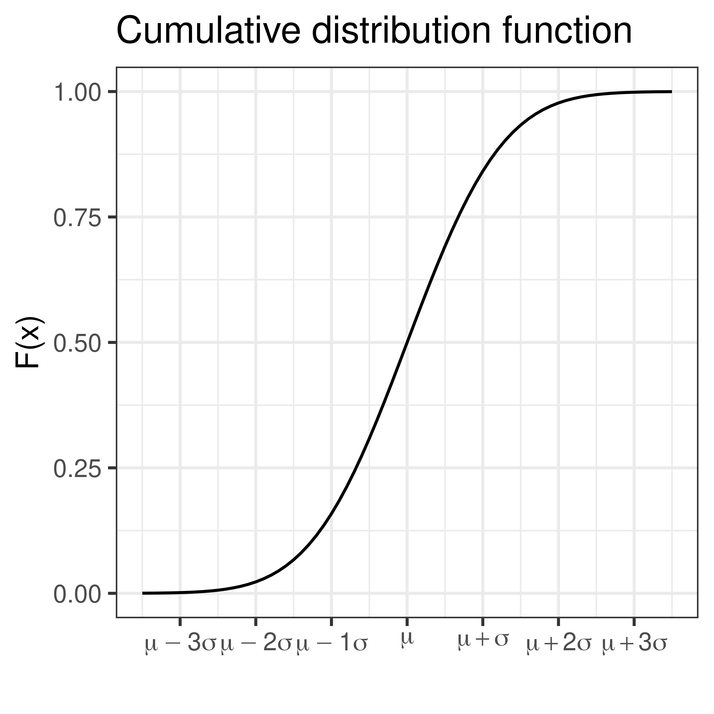
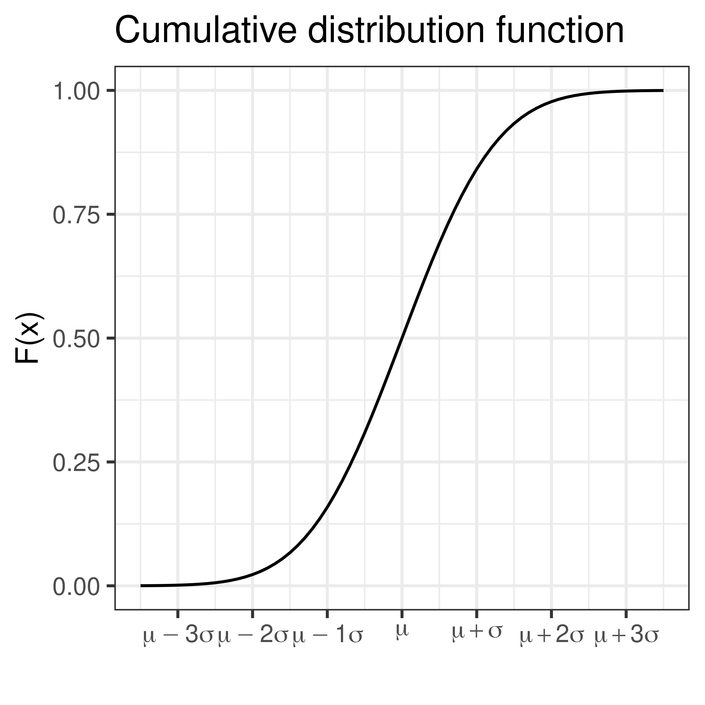
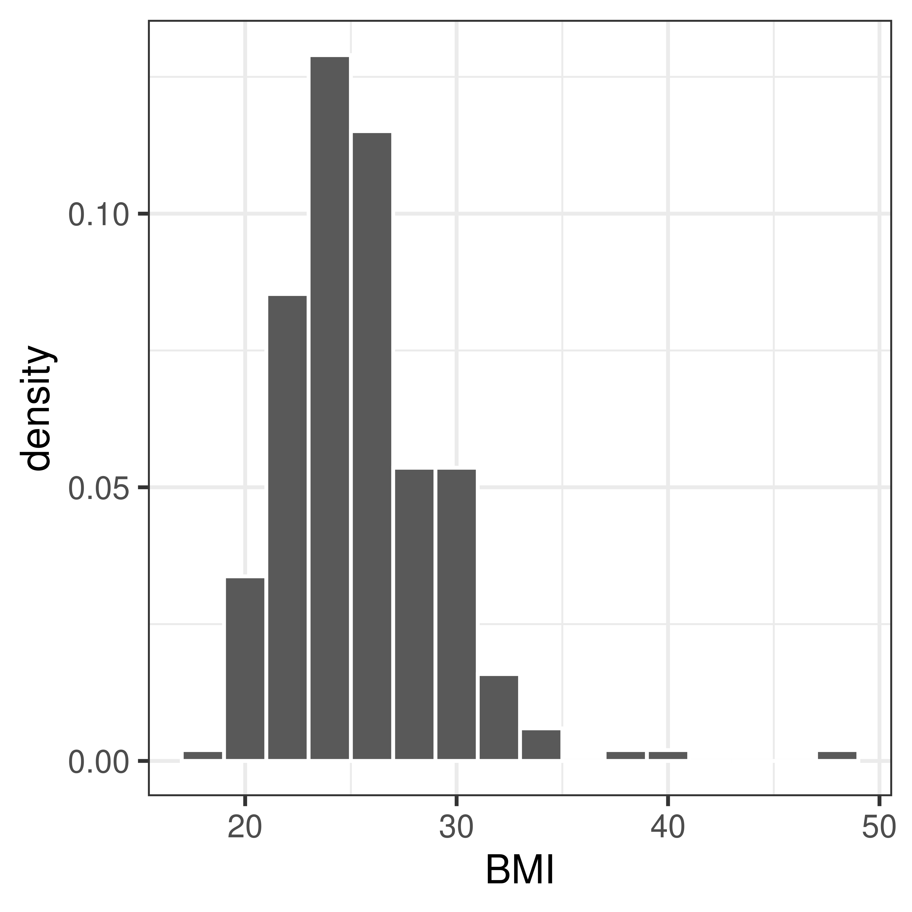
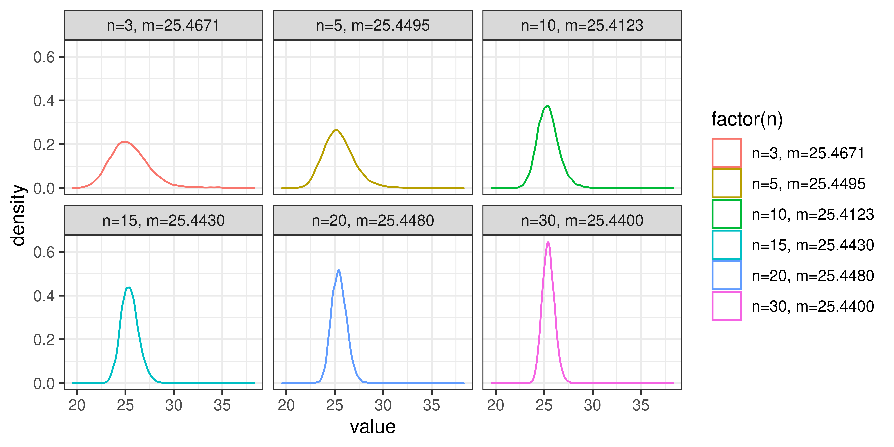
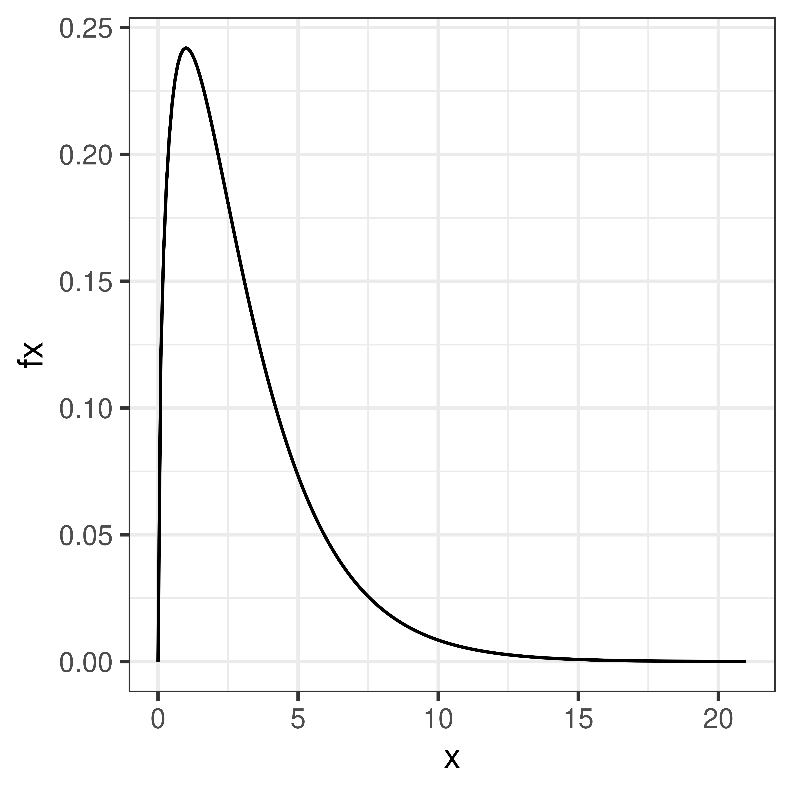
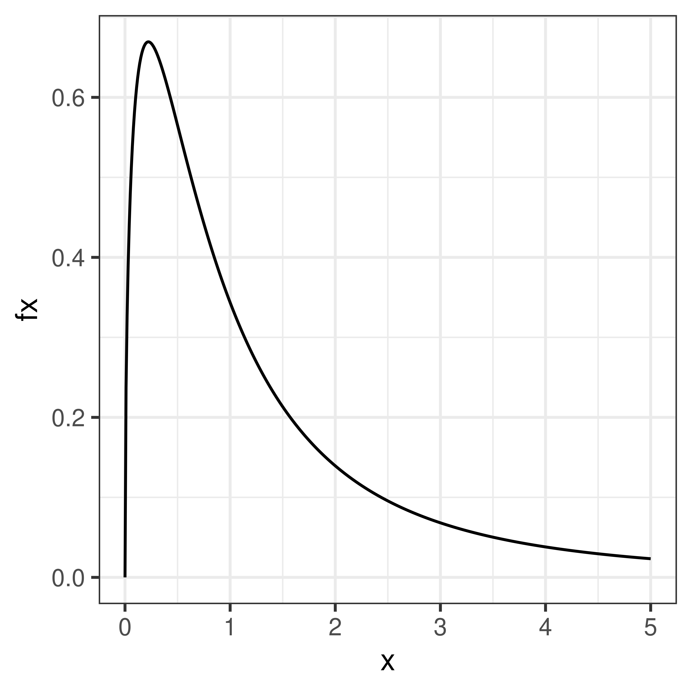
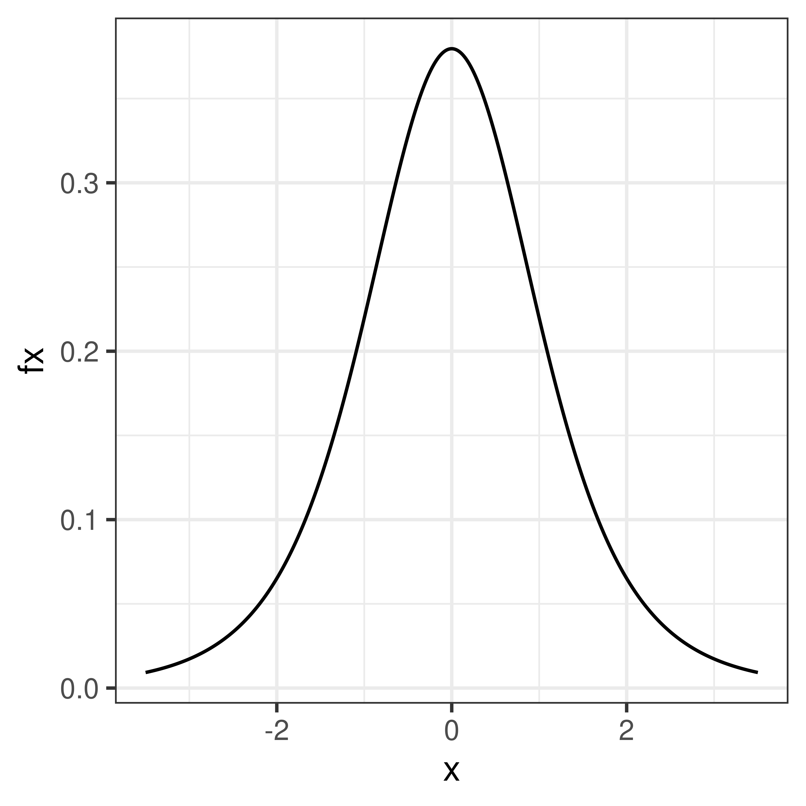

Chapter 3 Parametric continuous distributions
3.1 Normal distribution
The normal distribution (sometimes referred to as the Gaussian distribution) is a common probability distribution and many continuous random variables can be described by the normal distribution or be approximated by the normal distribution.
The normal probability density function
\[f(x) = \frac{1}{\sqrt{2 \pi} \sigma} e^{-\frac{1}{2} \left(\frac{x-\mu}{\sigma}\right)^2}\]
describes the distribution of a normal random variable, \(X\), with expected value \(\mu\) and standard deviation \(\sigma\). In short we write \(X \sim N(\mu, \sigma)\).

The bell-shaped normal distributions is symmetric around \(\mu\) and \(f(x) \rightarrow 0\) as \(x \rightarrow \infty\) and as \(x \rightarrow -\infty\).
As \(f(x)\) is well defined, values for the cumulative distribution function \(F(x) = \int_{- \infty}^x f(x) dx\) can be computed.
 

If \(X\) is normally distributed with expected value \(\mu\) and standard deviation \(\sigma\) we write:
\[X \sim N(\mu, \sigma)\]
Using transformation rules we can define
\[Z = \frac{X-\mu}{\sigma}, \, Z \sim N(0,1)\]
Values for the cumulative standard normal distribution, \(F(z)\), are tabulated (and easy to compute in R using the function pnorm).
Some value of particular interest:
F(1.64) = 0.95 F(1.96) = 0.975
As the normal distribution is symmetric
F(-1.64) = 0.05 F(-1.96) = 0.025
P(-1.96 < Z < 1.96) = 0.95
3.1.1 Sum of two normal random variables
If \(X \sim N(\mu_1, \sigma_1)\) and \(Y \sim N(\mu_2, \sigma_2)\) are two independent normal random variables, then their sum is also a random variable:
\[X + Y \sim N(\mu_1 + \mu_2, \sqrt{\sigma_1^2 + \sigma_2^2})\]
and
\[X - Y \sim N(\mu_1 - \mu_2, \sqrt{\sigma_1^2 + \sigma_2^2})\] This can be extended to the case with \(n\) independent and identically distributed random varibles \(X_i\) (\(i=1 \dots n\)). If all \(X_i\) are normally distributed with mean \(\mu\) and standard deviation \(\sigma\), \(X_i \in N(\mu, \sigma)\), then the sum of all \(n\) random variables will also be normally distributed with mean \(n\mu\) and standard deviation \(\sqrt{n} \sigma\).
3.2 Central limit theorem
The sum of \(n\) independent and equally distributed random variables is normally distributed, if \(n\) is large enough.
As a result of central limit theorem, the distribution of fractions or mean values of a sample follow the normal distribution, at least if the sample is large enough (a rule of thumb is that the sample size \(n>30\)).

## [1] 25## [1] 13## [1] 3.6Randomly sample 3, 5, 10, 15, 20, 30 men and compute the mean value, \(m\). Repeat many times to get the distribution of mean values.

Note, mean is just the sum divided by the number of samples \(n\).
3.3 \(\chi^2\)-distribution
If \(X_i \in N(0,1)\) then \(Y = \sum_{i=1}^n X_i^2\) is a \(\chi^2\) distributed random variable, \(Y \in \chi^2(n)\) with \(n\) degrees of freedom (df).

Example, variance is \(\chi^2\) distributed.
3.4 F-distribution
The ratio of two \(\chi^2\)-distributed variables is F-distributed

Example, the ratio of two variances is F-distributed
3.5 t-distribution
The ratio of a normally distributed variable and a \(\chi^2\)-distributed variable is t-distributed.

Example, the ratio between mean and variance is t-distributed.